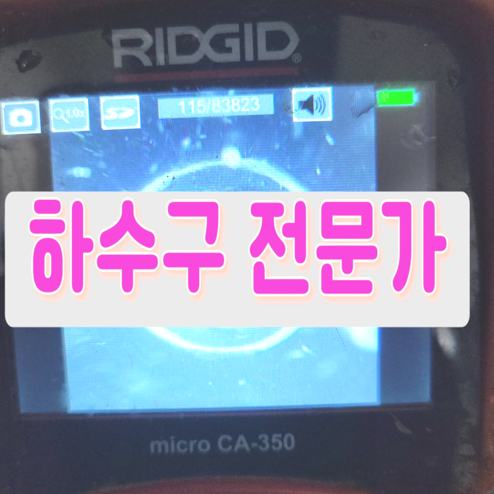
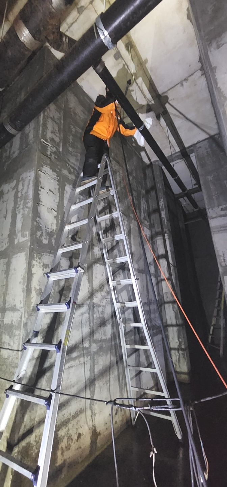
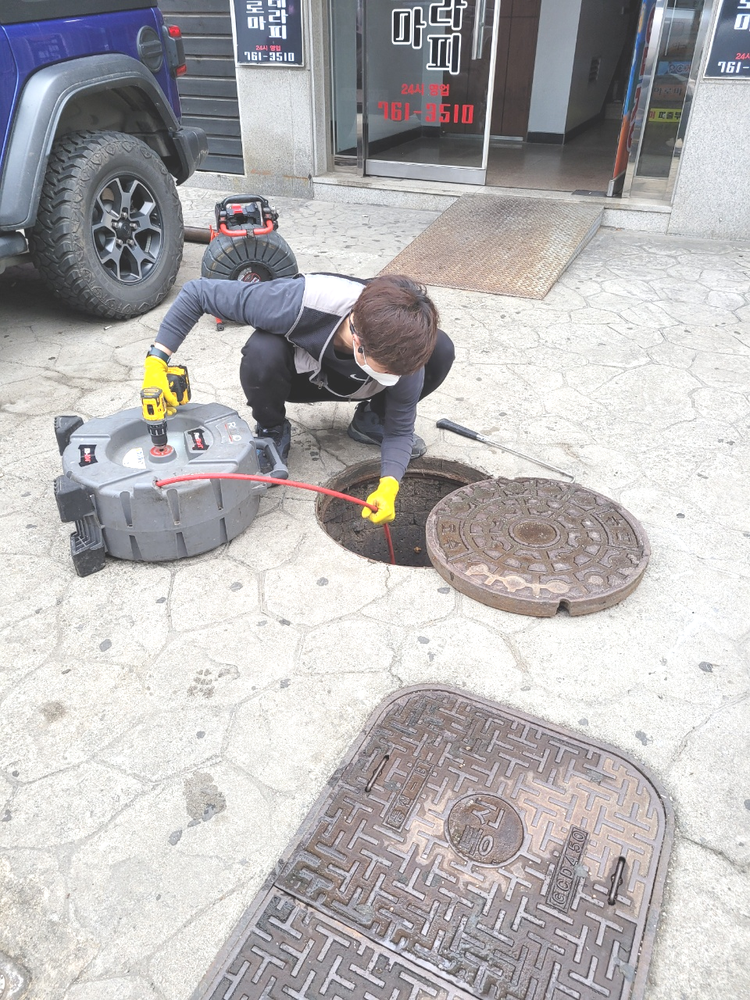
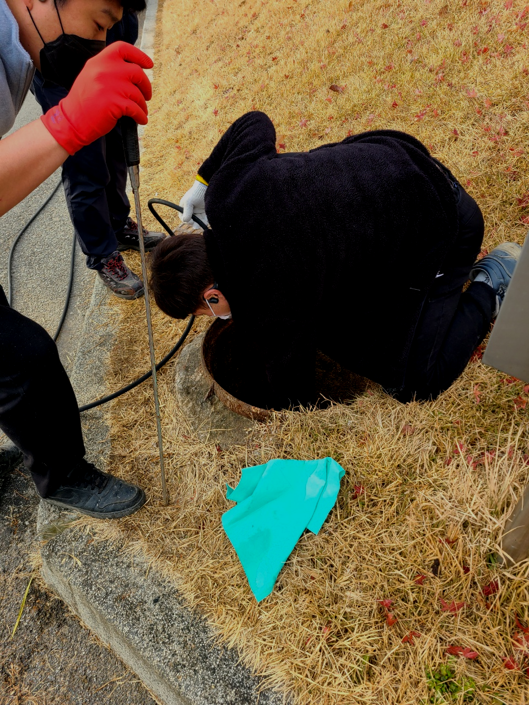
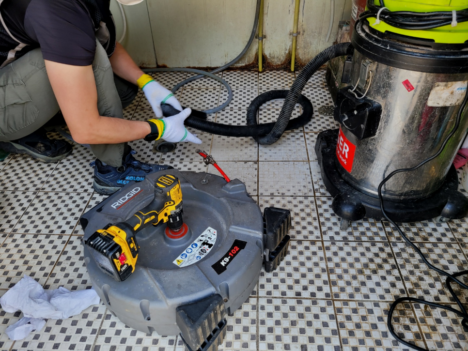
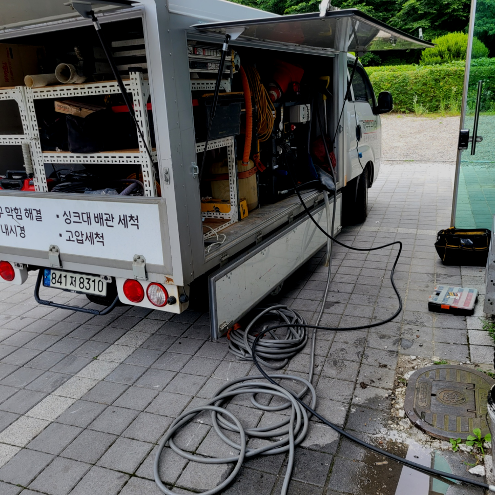
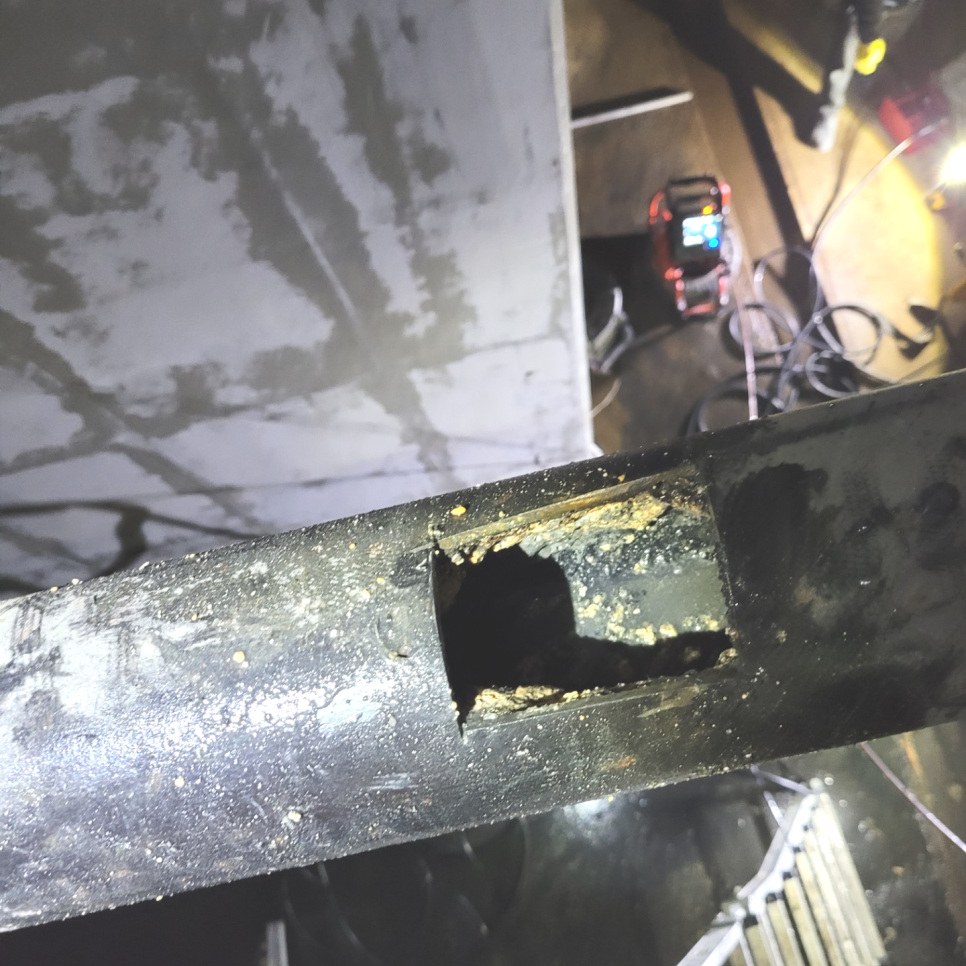

🏠 평택 현덕 하수구막힘 뚫음 안중 맨홀하수구 역류 넘침 해결하는 설비업체
평택 싱크대막힘 전문 시공 후기

📋 작업 개요
- 위치: 평택
- 서비스 유형: 싱크대막힘, 변기막힘, 하수구막힘, 배관막힘, 맨홀막힘, 역류해결, 뚫는업체, 배관청소, 설비공사
- 작업 일시: 2023. 10. 31. 23:04
- 업체명: 하수구수사대 (010-5615-2118)
🔍 문제 상황
안녕하십니까^^
설비전문업체 "하수구수사대"를 찾아주셔서 감사합니다^^
우리는 가정이나 직장에서 의식하지 못하고 다양한 설비시설 특히 퇴수시설을 접하고 살아갑니다. 싱크대,변기,세면대 등 우리 삶 속에서 깨끗하고 간편하게 이용하고고 있는 필수 시설입니다.
배출관 막힘 상황에 따라 통수방식이 달라서 최신장비로 확실한 원인을 검수하고 진단하여 이에 맞는 적절한 장비를 택해 작업을 진행해야합니다.
평택 현덕 하수구막힘 뚫음 안중 맨홀하수구 역류 넘침 해결하는 설비업체

🔎 원인 분석
💡 전문가 진단: 평택 현덕 하수구막힘 뚫음 안중 맨홀하수구 역류 넘침 해결하는 설비업체
가정먼저 중요한것은 배관내시경인데요 만에하나 갖추고 있지 않다면 문제를 확실하게 알아 볼수가 없습니다. 퇴수구의 모양은 연결부분이 있어 눈으로만 확인하는게 어렵기만한데요 그로 인해 배관내시경카메라는 필수 장비입니다.
경력이 중요한 까닭은 배수구 구조를 얼마나 잘 이유하느냐가 작업에 중요하기 때문입니다. 하수관의 원리를 이해하지 못하시는 고객님들은 잘 알지 못하시기 때문에 옳지 못한 방법으로 뚫기를 시도하시는 경우가 빈번합니다.
퇴수 내부에 어느 정도 이물질이 쌓여있는지 확인하기 위해서는 내시경 카메라를 넣고 원인을 파악하는데요. 기름 슬러지가 원인이 되어 막혔다면 내시경 카메라가 뿌옇게 보이기 때문에 일단 석션 장비로 통수 작업을 시켜준 뒤에 내시경을 다시 넣게 됩니다.
수도권 모든 지역에서 배수관경력 있는 사람들이 대기하고 있기 때문에 계신 지역이 어디든지 방문 드릴 수 있으며 아무리 심각한 상황이라도 빠르게 대처해 드리기 위해서 1시간 내에 도착을 약속합니다.
저희는 오랜 경력과 노하우를 통해서 전문 장비를 가지고 작업을 해결하고 있는 곳인 만큼 하수도 막힘이 발생을 하게 되면 고객과의 빠른 상담을 한 후에 방문을 진행해 드리고 있습니다. 우리가 무심코 매일 사용을 하고 있는 하수도배관은 잠시만 막히게 되더라도 아주 불편한 상황이 발생하게 될 수밖에 없는데요.
악취는 퇴수 내부에 많은 이물질들이 서로 엉켜서 발생하는 악취입니다. 이러한 고약한 악취는 공기를 타고 올라와 외부로 유출이 됩니다. 그렇기 때문에 하수구를 고치기 위해서는 근본적인 원인을 알아야 합니다.

🔧 작업 과정
하수구가 막히는 원인은 다양한데요. 쓰레기나 휴지, 기름때, 그리고 여러 찌꺼기 등으로 배출구가 막히게 돼요. 그러므로 사전에 이러한 부분들 주의해 주시는 게 좋을 것 같습니다.
배관막힘의 원인이 어떤 것인지를 먼저 파악하고 해결을 하는 것이 필요하다고 할 수 있습니다. 배관내시경으로 내부를 보니 이미 많은 이물질들로 인해서 역류까지 발생을 하게 된 것이었습니다.
퇴수구내부 모습은 육안상 판별이어려운 특징때문이죠. 예방히기위해 하수관으로 찌꺼기들이 들어가지않도록 주의를 기울여야합니다.이럴때 요긴한것이 거름망같은 것들인데요
그럼에도불구하고 주위엔 하수관 전문가들이 있어 어떠한사항을따져 정해야할지 명확하게알고계실까요? 그러하다면 어떠한 하수관 전문기사들과 해결을해야될것인가 일단먼저순위중 어떤것을 염두에두고 작업을의뢰할지 설명드리겠습니다
하수관막힘으로인해 이러지도 저러지도못한다면 곧장 출동해서 해결해드리고있으니 언제든지 전화만해주세요.저희팀은 하청업체가 절대아니며 경력있는분들로만 구성돼있는 시스템들이 짜여져있답니다.
전문기사의 실력으로 빠르게 고치실수있던것도 위와비슷한 문제때문에 증상이더 나빠지게됩니다.돈을아끼기위해서 할수있다면 퇴수뚫으실려고 하는생각들을 지양하셔야합니다.
이해가능한 견적비용으로 꼼꼼하게 본다음에 수긍가능한 견적가를내고있어서 고민을크게 하지않아도돼요.가령 생각해보고싶으시다면 나중에문의 하셔도됩니다 매번얘기해드리고 배수관 뚫고있어서 돈에관한부분은 안심하셔도괜찮아요.
이번에 다녀온 출동 건은 상가건물에서 연락을 주신 건 없었고, 남자화장실 바닥 배관 배관 막힘이 발생된 것 같다고 건물관리인분께서 연락을 주셨습니다.


✅ 작업 완료
배관배관 내부는 우리가 생각하는 것 이상으로 많은 변수에 노출되어 있습니다. 가장 대표적인 예가 배관배관 손상인데요. 워낙 길게 매립되어 있는 데다 주변 공사, 충격 등에 의해일부가 무너져 내린다던 자 손상될 확률은 얼마든지 있습니다.
여러분들이 생각하시는 것보다 깊게까지 자리 잡은 퇴수이기에 육안으로만 탐지하기에는 한계치가 존재하기 마련입니다.원인을 파악하기 위해 내시경을 투입하고 문제가 되는 곳을 진단해야만 하는 사유가 되기도 합니다. 기름 슬러지는 날이면 날마다 쌓이고 쌓이기 때문에 뚫어내기가 난감해집니다.
#하수구막힘 #하수구뚫음 #하수구역류 #씽크대막힘 #싱크대역류 #오수관막힘 #하수구청소 #욕실하수구막힘 #변기막힘 #하수구뚫는비용 #싱크대수리 #화장실막힘




⚠️ 주방 싱크대 배관 막힘 예방 수칙
- ✅ 기름기가 묻은 식기나 프라이팬은 설거지 전 키친타올로 반드시 기름때를 닦아내세요.
- ✅ 주기적으로 싱크대 개수대에 뜨거운 물을 가득 받아 한 번에 내려 배관 내부 기름을 씻어내세요.
- ✅ 배수구 거름망을 미세한 필터로 사용하시고 음식물 찌꺼기가 틈으로 새어 들지 않게 관리하세요.
- ✅ 베이킹소다와 식초를 뜨거운 물과 함께 일주일에 한 번씩 부어주면 배관 살균과 막힘 예방에 좋습니다.
💡 핵심 정리
- 확실한 장비 작업(내시경 점검 및 샤프트 스케일링)으로 원인을 뿌리 뽑습니다.
- 작업 후 1년 이내에 동일한 부위 재발 시 100% 무상 A/S 서비스를 보장합니다.
- 서울 · 경기 · 인천 전 지역에 24시간 언제든 긴급 출동할 수 있도록 항시 대기 중입니다.
❓ 자주 묻는 질문 (FAQ)
🚨 평택 싱크대막힘 문제로 고민이신가요?
정확한 원인 진단과 확실한 시공으로 재발 없는 해결을 약속드립니다.
24시간 긴급 출동 | 서울 · 경기 · 인천 전지역 | 1년 내 재발 시 무상 A/S